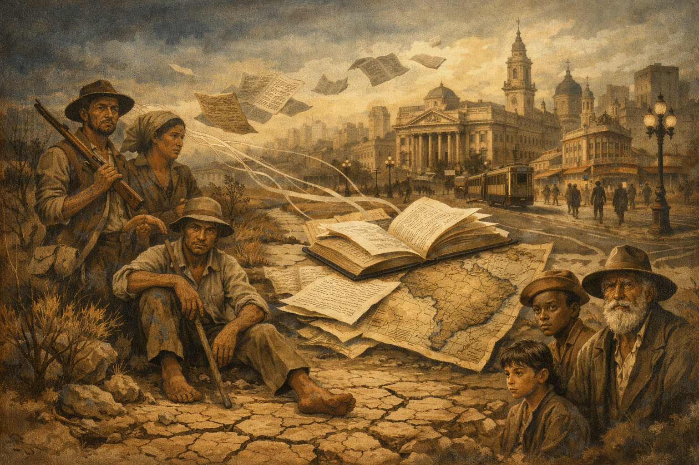

Pré-Modernismo no Brasil
O Pré-Modernismo no Brasil corresponde a um período de transição da literatura brasileira, situado aproximadamente entre 1902 e 1922. Mais do que uma escola literária com regras definidas, trata-se de um momento de ruptura gradual com as estéticas do final do século XIX e de preparação para as transformações profundas que seriam consolidadas pelo Modernismo.
Nesse período, a literatura passa a abandonar o idealismo excessivo, o formalismo rígido e a visão elitista herdada do Parnasianismo, do Realismo e do Naturalismo, voltando-se para uma representação mais crítica e complexa do Brasil real, com suas desigualdades sociais, tensões regionais e conflitos identitários.
Contexto Histórico e Social
O Pré-Modernismo desenvolveu-se em um período marcado por intensas transformações políticas, econômicas e sociais. A recente Proclamação da República não conseguiu resolver problemas estruturais herdados do período imperial, como a concentração de renda, o abandono das populações rurais e a exclusão social de grande parte da população.
Revoltas populares como a Guerra de Canudos, o Movimento do Contestado e as greves operárias urbanas revelaram um país profundamente desigual. Nesse contexto, os escritores pré-modernistas assumem o papel de intérpretes da nação, denunciando injustiças e questionando os discursos oficiais de progresso e civilização.
Características do Pré-Modernismo
A literatura pré-modernista caracteriza-se pela diversidade estética e temática, refletindo o caráter transitório do período. Entre suas principais características, destacam-se:
- Denúncia social: exposição das desigualdades econômicas, políticas e culturais.
- Regionalismo crítico: valorização do sertão, do interior e das margens sociais.
- Linguagem mais direta: afastamento do excesso de ornamentos formais.
- Questionamento da identidade nacional: reflexão sobre o que é ser brasileiro.
- Hibridismo estético: convivência de traços realistas, naturalistas e simbolistas.
Principais Autores e Obras do Pré-Modernismo
Os escritores associados ao Pré-Modernismo não formam um grupo homogêneo, mas compartilham o interesse em interpretar criticamente o Brasil de seu tempo. Suas obras revelam as contradições sociais, políticas e culturais de um país que buscava afirmar-se como nação republicana, mas permanecia marcado pela exclusão, pelo autoritarismo e pela desigualdade.
Euclides da Cunha
Euclides da Cunha (1866–1909) foi engenheiro, jornalista e escritor. Atuou como correspondente do jornal O Estado de S. Paulo durante a Guerra de Canudos, experiência que marcou profundamente sua visão de mundo e deu origem à sua obra mais importante. Intelectual influenciado pelo cientificismo do século XIX, Euclides combina, em seus textos, conceitos da geografia, da sociologia e da história com uma escrita literária de grande força expressiva.
Sua principal obra, Os Sertões (1902), é considerada o marco inicial do Pré-Modernismo. O livro analisa o conflito de Canudos em três partes: A Terra, O Homem e A Luta. Inicialmente, o autor adota uma visão determinista, explicando o comportamento humano a partir do meio físico e da herança racial. No entanto, à medida que a narrativa avança, o tom científico cede espaço à indignação moral.
Euclides denuncia a violência do Estado brasileiro contra uma população pobre, abandonada e incompreendida. Ao retratar o sertanejo como resistente e adaptado a um ambiente hostil, o autor desmonta a ideia de atraso natural e expõe o fracasso do projeto civilizatório republicano. A obra é, ao mesmo tempo, um documento histórico e uma poderosa crítica social, revelando um Brasil profundo que a elite urbana preferia ignorar.
Lima Barreto
Lima Barreto (1881–1922) foi um escritor profundamente crítico da sociedade brasileira. Negro, pobre e morador dos subúrbios do Rio de Janeiro, viveu à margem das elites intelectuais e sofreu preconceito racial e social ao longo de sua vida. Sua experiência pessoal influenciou diretamente sua obra, marcada pela ironia, pela linguagem simples e pela denúncia das injustiças sociais.
Em Triste Fim de Policarpo Quaresma (1915), Lima Barreto constrói uma sátira amarga do nacionalismo ufanista. O protagonista acredita ingenuamente nos valores patrióticos e no progresso prometido pela República, mas acaba sendo destruído por um sistema político autoritário, corrupto e excludente. O romance revela o choque entre o ideal e a realidade brasileira.
Já em Clara dos Anjos, o autor denuncia o racismo estrutural e a vulnerabilidade das mulheres pobres na sociedade carioca. Lima Barreto expõe o preconceito de classe e cor, mostrando como os discursos morais e civilizatórios da época serviam para legitimar a exclusão. Sua obra inaugura uma literatura assumidamente antielitista, que questiona o papel das instituições e da intelectualidade.
Monteiro Lobato
Monteiro Lobato (1882–1948) foi escritor, editor e intelectual engajado nos debates sociais e econômicos do Brasil. Embora seja amplamente conhecido pela literatura infantil, sua produção adulta possui forte teor crítico e insere-se claramente no contexto pré-modernista.
Em Urupês (1918), Lobato apresenta o personagem Jeca Tatu, símbolo do homem do campo abandonado pelo poder público. Inicialmente retratado de forma estereotipada, o Jeca passa a ser compreendido como vítima da miséria, das doenças e da falta de políticas públicas. O autor denuncia o atraso rural não como defeito moral, mas como consequência do descaso do Estado.
A obra de Lobato reflete a preocupação com a modernização do país e com a necessidade de reformas estruturais, especialmente na educação e na saúde. Seu regionalismo é crítico e combativo, voltado para a transformação social.
Graça Aranha
Graça Aranha (1868–1931) foi diplomata, escritor e intelectual que atuou como elo entre o Pré-Modernismo e o Modernismo. Participou ativamente dos debates culturais do início do século XX e esteve presente na Semana de Arte Moderna de 1922.
Sua obra mais conhecida, Canaã (1902), aborda a imigração europeia no Brasil e os conflitos culturais e raciais decorrentes desse processo. O romance discute a formação da identidade nacional, questionando a ideia de superioridade cultural europeia e problematizando o conceito de civilização.
Graça Aranha antecipa preocupações modernistas ao refletir sobre o choque entre tradição e modernidade, natureza e progresso. Sua obra contribui para ampliar o debate sobre a identidade brasileira e o papel da cultura na construção da nação.
Ampliação do Contexto Histórico do Pré-Modernismo
O Pré-Modernismo desenvolveu-se em um momento de profunda instabilidade social e política. A República, instaurada em 1889, manteve estruturas oligárquicas e excludentes, afastando grande parte da população das decisões políticas. O país vivia sob a política do café-com-leite, marcada pelo domínio das elites agrárias.
Nesse período, o Brasil enfrentou revoltas populares, como Canudos e o Contestado, além de greves operárias e tensões urbanas provocadas pela industrialização incipiente. A literatura pré-modernista surge como resposta a esse cenário, revelando o contraste entre o discurso oficial de progresso e a realidade de miséria e exclusão.
Ao retratar o sertão, os subúrbios, o campo e as camadas marginalizadas, os autores pré-modernistas ampliam o horizonte da literatura brasileira. Eles rompem com a visão idealizada do país e constroem uma narrativa crítica, que prepara o caminho para as inovações estéticas e ideológicas do Modernismo.
Fundamentação Crítica e Teórica
Para o crítico literário Alfredo Bosi, o Pré-Modernismo constitui uma literatura marcada pela tensão entre tradição e ruptura. Segundo o autor, esse período revela uma consciência crescente dos problemas nacionais e prepara o terreno ideológico e estético para o Modernismo.
Já Antonio Candido destaca a importância social do Pré-Modernismo, ao afirmar que esses escritores inauguram uma literatura preocupada não apenas com a forma, mas com a função social da arte, colocando a palavra literária a serviço da interpretação do país.
Pré-Modernismo x Outros Movimentos
O Pré-Modernismo diferencia-se dos movimentos literários anteriores:
- Parnasianismo: culto à forma perfeita e afastamento da realidade social.
- Realismo/Naturalismo: objetividade excessiva e determinismo científico.
- Pré-Modernismo: crítica social, diversidade estética e foco no Brasil real.
Importância e Legado
O Pré-Modernismo foi fundamental para amadurecer a literatura brasileira, ao romper com a alienação estética e incorporar temas sociais, regionais e identitários. Seus autores abriram espaço para uma literatura mais crítica, consciente e próxima da realidade nacional.
Ao questionar valores, denunciar injustiças e explorar novos caminhos expressivos, o Pré-Modernismo preparou o terreno para a revolução artística e cultural que se consolidaria com o Modernismo a partir de 1922.
Conclusão
O Pré-Modernismo no Brasil representa um momento decisivo da história literária nacional. Embora não constitua uma escola literária homogênea, sua importância reside na capacidade de revelar o país profundo, dar voz aos excluídos e problematizar a identidade brasileira.
“O Pré-Modernismo não é um estilo, mas uma atitude crítica diante da realidade brasileira, que prepara o caminho para a renovação modernista.” — Alfredo Bosi, História Concisa da Literatura Brasileira
Explore Outros Conteúdos
Continue seus estudos acessando outras seções do site Mestre Kira: